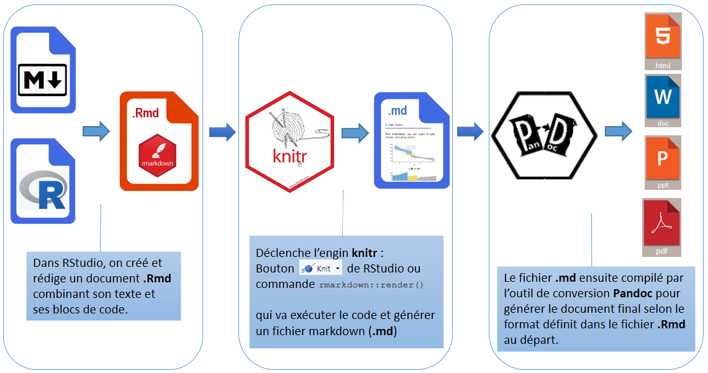

Atelier RMarkdown
Caroline Patenaude
Bibliothèque des lettres et sciences humaines
2020-11-11
14. Code
- Pour présenter et souligner des extraits de code sans l’exécuter, comme du texte, l’insérer entre 2 accents graves :
r mean(23, 65, 43, 34, 56)
- Insérer du texte dans des blocs: entourer le texte de ``` au début et à la fin
Du texte dans un bloc
Du texte avec indentation
- Sinon les espaces en début de ligne ne sont jamais pris en compte
Quelques détails finals:
Il est préférable d’ajouter une ligne vide entre différents éléments, comme un titre et un paragraphe.
Pour faire un saut de ligne: terminer la ligne par deux espaces + Entrée.
Pour ajouter des espaces supplémentaires entre les lignes/sections, utiliser la balise html: <br>.
Pour inclure des commentaires qui ne sortiront pas dans le document final, utiliser commentaires html: <!-- commentaires -->.


7. Comment ça marche?
R Markdown combine différents processus pour créer à partir d’un seul fichier des documents en différents formats:
